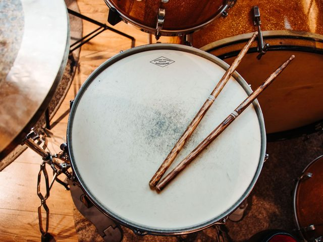
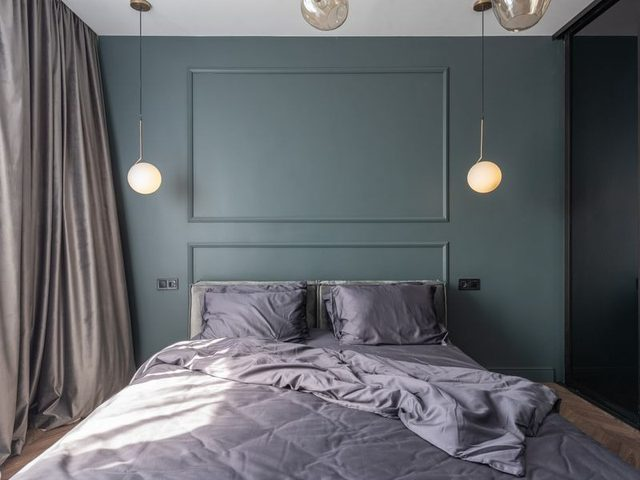
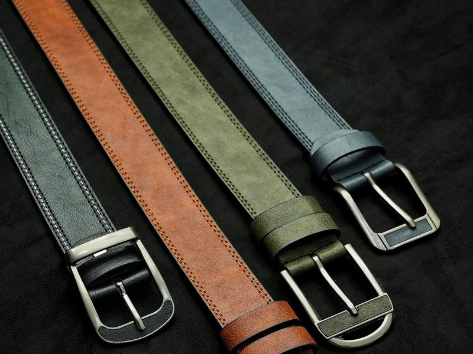
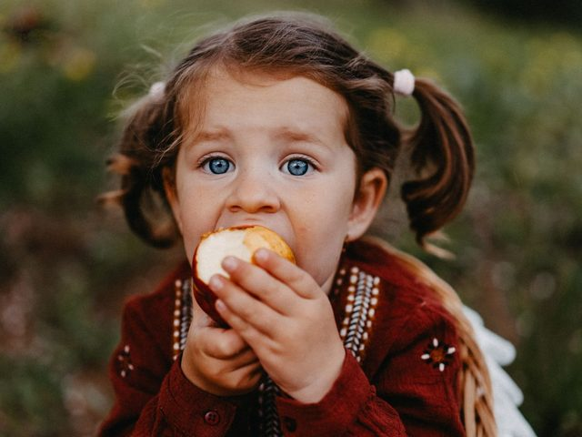
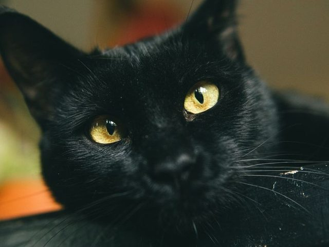

VOCABULARY · WORD UP 單字複習 UNIT 5
B-II．B 開頭（二）
WORD UP「B-II」的 34 個字（beat 到 blame）。紅色＝要複習，藍色標籤＝WORD UP 標熟記、還要在這裡考對。
共 34 個單字．點 🔊 聽發音

1beatv.
打敗；敲打
三態 beat-beat-beaten
Our team beat them 3 to 1.我們隊以三比一打敗他們。
2beautifuladj.
美麗的
What a beautiful sunset!好美的夕陽！
3becomev.
變成；成為
三態 become-became-become
She became a teacher last year.她去年成為老師。
4bedn.
床
go to bed 上床睡覺
I go to bed at ten.我十點上床睡覺。

5bedroomn.
臥室
My bedroom is upstairs.我的臥室在樓上。
6been.
蜜蜂
as busy as a bee 非常忙
A bee is flying around the flowers.一隻蜜蜂在花旁邊飛。

7beefn.
牛肉
不可數
I'd like beef noodles, please.我要一碗牛肉麵。

8beern.
啤酒
Dad had a glass of beer with dinner.爸爸晚餐喝了一杯啤酒。
9beginv.
開始
三態 begin-began-begun
The movie begins at seven.電影七點開始。

10beginnern.
初學者
This class is for beginners.這堂課是給初學者上的。
11beginningn.
開始；開端
at the beginning of + 時間
We have a test at the beginning of the month.月初我們有考試。

12behavev.
表現；守規矩
behave yourself 規矩一點
The children behaved well at the party.孩子們在派對上很守規矩。
13beliefn.
信念；信仰
believe 的名詞
He has a strong belief in himself.他對自己很有信心。
14believev.
相信
believe in 信任、相信有
I can't believe it!我真不敢相信！

15belln.
鈴；鐘
The school bell rang.學校的鐘聲響了。
16belongv.
屬於
belong to + 人
This bag belongs to Amy.這個包包是 Amy 的。
17belowprep./adv.
在…下面；低於
above 在…上面
The temperature is below zero.氣溫在零度以下。

18beltn.
皮帶；安全帶
seat belt 安全帶
Fasten your seat belt, please.請繫好安全帶。
19benchn.
長椅
Let's sit on the bench and rest.我們坐在長椅上休息一下吧。
20besidesprep./adv.
除了…之外（還有）；此外
besides 包含在內；except 不包含
Besides English, she speaks Japanese.除了英文，她還會說日文。
21bestadj./adv.
最好的；最好地
good／well 的最高級
You are my best friend.你是我最好的朋友。
22betteradj./adv.
較好的；更好地
good／well 的比較級
I feel better today.我今天覺得好多了。

23bicyclen.
腳踏車
= bike；ride a bicycle
I ride my bicycle to school.我騎腳踏車上學。
24bigadj.
大的
比較級 bigger
An elephant is bigger than a horse.大象比馬大。

25billn.
帳單；鈔票
Can I have the bill, please?請給我帳單。

26biologyn.
生物學
We learn about plants in biology class.我們在生物課學植物。
27birdn.
鳥
The birds are singing in the tree.鳥在樹上唱歌。

28birthdayn.
生日
Happy birthday!
Happy birthday to you!祝你生日快樂！
29bitn.
一點點
a bit ＝ a little
I'm a bit tired.我有一點累。

30bitev./n.
咬；一口
三態 bite-bit-bitten
Be careful. The dog may bite.小心，那隻狗可能會咬人。

31bitteradj.
苦的
sweet 甜的、sour 酸的
This medicine tastes bitter.這個藥嚐起來很苦。

32blackadj./n.
黑色的；黑色
She has a black cat.她有一隻黑貓。

33blackboardn.
黑板
The teacher wrote on the blackboard.老師在黑板上寫字。
34blamev.
責怪
blame + 人 + for + 事
Don't blame me for your mistake.不要把你的錯怪到我身上。
FOCUS
常考片語
| 說法 | 中文 | 例子 |
|---|---|---|
| belong to + 人 | 屬於某人 | The book belongs to me. |
| believe in | 相信有、信任 | Do you believe in ghosts? |
| at the beginning of | 在…的開始 | at the beginning of the year |
| blame + 人 + for + 事 | 因某事責怪某人 | blame him for the mistake |
| a bit / a little | 一點點 | a bit cold |
| go to bed | 上床睡覺 | go to bed early |
belong 不用進行式：This pen belongs to me.（不說 is belonging）
FOCUS
容易搞混的字
| 字 | 用法 | 例子 |
|---|---|---|
| besides / except | 除了…還有（包含）／ 除了…以外（不包含） | Besides Tom, Amy came too. ／ Everyone came except Tom. |
| belief / believe | 名詞 ／ 動詞 | my belief ／ I believe you. |
| begin / beginner / beginning | 開始 ／ 初學者 ／ 開端 | begin to learn ／ a beginner ／ the beginning |
| good-better-best | 好 ／ 較好 ／ 最好 | good ／ better than ／ the best |
| bit / bite | 一點點 ／ 咬（過去式也是 bit） | a bit ／ The dog bit me. |